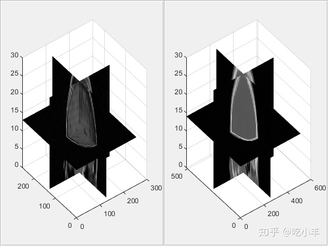
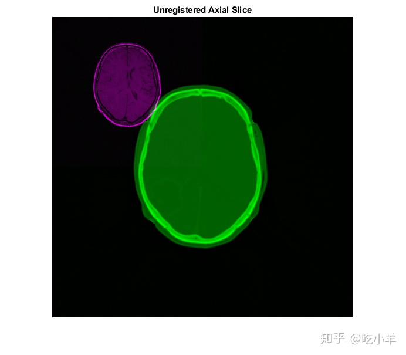
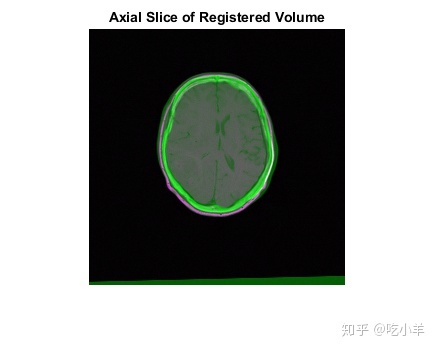
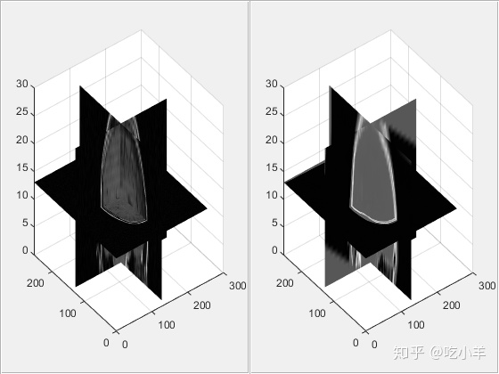
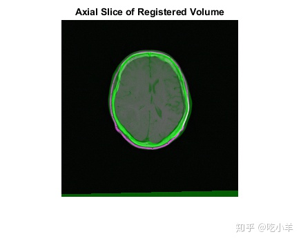

Home
本示例示出了如何使用imregister，imregtform和imwarp自动配准两个体积数据集：CT图像，是在不同的时间相同的患者采集的T1加权MR图像。不像其他一些技术，imregister和imregtform没有寻找特征或使用的控制点。基于强度的配准通常非常适合医学和遥感图像。
此示例中使用的3-D CT和MRI数据集由Michael Fitzpatrick博士提供，作为 “回顾性图像配准评估（RIRE）数据集”的一部分。
步骤1：载入图片
本示例使用同一患者头部的两个3-D图像。在配准问题中，我们将一个图像视为固定图像，将另一个图像视为运动图像。配准的目的是使运动图像与固定图像对齐。在该示例中，固定图像是T1加权MRI图像。我们要配准的运动图像是CT图像。数据采用追溯图像配准评估（RIRE）项目使用的文件格式存储。使用multibandread读取包含图像数据的二进制文件。使用helperReadHeaderRIRE函数获取与每个图像关联的元数据。您可以使用以下链接找到有关RIRE文件格式的更多信息：RIRE数据格式
fixedHeader = helperReadHeaderRIRE('rirePatient007MRT1.header');
movingHeader = helperReadHeaderRIRE('rirePatient007CT.header');
fixedVolume = multibandread('rirePatient007MRT1.bin',...
[fixedHeader.Rows, fixedHeader.Columns, fixedHeader.Slices],...
'int16=>single', 0, 'bsq', 'ieee-be' );
movingVolume = multibandread('rirePatient007CT.bin',...
[movingHeader.Rows, movingHeader.Columns, movingHeader.Slices],...
'int16=>single', 0, 'bsq', 'ieee-be' );
helperVolumeRegistration是帮助函数，可帮助判断3D配准结果的质量。您可以交互旋转视图，两个轴将保持同步。
helperVolumeRegistration(fixedVolume,movingVolume);

您还可以imshowpair用来查看固定体积和移动体积中的单个平面，以大致了解体积的对齐方式。在来自imshowpair的重叠图像中，灰色区域对应于具有相似强度的区域，而洋红色和绿色区域则表示一个图像比另一个图像亮的地方。用imshowpair沿穿过每个体积的中心截取的轴向切片观察图像体积的配准不良。
centerFixed = size(fixedVolume)/2;
centerMoving = size(movingVolume)/2;
figure
imshowpair(movingVolume(:,:,centerMoving(3)), fixedVolume(:,:,centerFixed(3)));
title('Unregistered Axial Slice')

步骤2：设置初始配准
通过imregconfig函数，可以轻松选择与imregister一起使用的正确的优化器和指标配置。这两个图像来自MRI和CT这两种不同的模式，因此“多模式”选项是合适的。
[optimizer,metric] = imregconfig('multimodal');
imregister指定关于输入图像的分辨率和/或位置的空间参考信息时，所使用的算法将收敛更快地获得更好的结果。在这种情况下，CT和MRI数据集的分辨率在图像元数据中定义。使用此元数据构造imref3d空间参考对象，我们将其作为配准的输入参数传递。
Rfixed = imref3d(size(fixedVolume),fixedHeader.PixelSize(2),fixedHeader.PixelSize(1),fixedHeader.SliceThickness); Rmoving = imref3d(size(movingVolume),movingHeader.PixelSize(2),movingHeader.PixelSize(1),movingHeader.SliceThickness);
空间参照对象的属性定义了关联的图像体积在世界坐标系中的位置以及每个维度中的像素范围。Rmoving的XWorldLimits属性定义移动体积在X维度上的位置。PixelExtentInWorld属性以X维度（沿列）以世界单位定义每个像素的大小。在世界X坐标系中，移动量从0.3269扩展到334.97，每个像素的范围为0.6536mm。以毫米为单位，是因为用于构造空间参考的标头信息以毫米为单位。ImageExtentInWorldX属性确定以世界单位表示的运动图像体积的以世界单位表示的完整范围。
Rmoving.XWorldLimits
ans = 1×2
0.3268 334.9674
Rmoving.PixelExtentInWorldX
ans = 0.6536
Rmoving.ImageExtentInWorldX
ans = 334.6406
两个体积之间的失配包括平移，缩放和旋转。使用相似度变换来配准图像。
首先使用imregister获取已配准的输出体积图像，您可以直接查看和观察该图像获得配准结果的品质。
为优化程序的InitialRadius属性指定非默认设置，以实现配准结果更好的收敛。
optimizer.InitialRadius = 0.004; movingRegisteredVolume = imregister(movingVolume,Rmoving, fixedVolume,Rfixed, 'rigid', optimizer, metric);
再次使用imshowpair，并重复检查通过对齐的体积中心获取的轴向切片的配准过程，以了解配准的成功程度。
figure
imshowpair(movingRegisteredVolume(:,:,centerFixed(3)), fixedVolume(:,:,centerFixed(3)));
title('Axial Slice of Registered Volume')

从上方的轴向切片看来，配准成功。再次使用helperVolumeRegistration来查看已配准的体积，以继续判断配准是否成功。
helperVolumeRegistration(fixedVolume,movingRegisteredVolume);

第3步：获取移动图片与固定图片对齐的3-D几何变换
当您对用于imregister函数形成配准输出图像的几何变换估计感兴趣时，可以使用imregtform函数。imregtform使用与imregister相同的算法，并接受与imregister相同的输入参数。由于目视检查imregister表明体积配准成功，因此可以使用相同的输入参数调用imregtform以获取与此配准结果关联的几何变换。
geomtform = imregtform(movingVolume,Rmoving, fixedVolume,Rfixed, 'rigid', optimizer, metric)
geomtform =
affine3d with properties:
T: [4x4 double]
Dimensionality: 3
imregtform的结果是一个几何变换对象。该对象包括定义3D仿射变换矩阵的属性T。
geomtform.T
ans = 4×4
0.9704 -0.0143 -0.2410 0
0.0228 0.9992 0.0324 0
0.2404 -0.0369 0.9700 0
-15.8648 -17.5692 29.1830 1.0000
几何变换的transformPointsForward方法可用于确定运动图像中的点[u，v，w]作为配准结果的映射位置。由于将空间参考输入指定给imregtform，因此几何变换将世界坐标系中的点从移动映射为固定。下面使用transformPointsForward方法确定运动图像中心在世界坐标系中的变换位置。
centerXWorld = mean(Rmoving.XWorldLimits); centerYWorld = mean(Rmoving.YWorldLimits); centerZWorld = mean(Rmoving.ZWorldLimits); [xWorld,yWorld,zWorld] = transformPointsForward(geomtform,centerXWorld,centerYWorld,centerZWorld);
您可以使用Rfixed的worldToSubscript方法确定与移动体积的中心对齐的固定体积的元素。
[r,c,p] = worldToSubscript(Rfixed,xWorld,yWorld,zWorld) r = 116 c = 132 p = 13
步骤4：将几何变换估计应用于运动图像体积。
imwarp函数可用于将几何形式的估计值从不规则形式应用于3-D体积。“ OutputView”名称/值用于定义空间参考参数，该参数确定输出重采样图像的世界范围和分辨率。imregister通过使用与固定图像关联的空间参考对象，可以产生相同的结果。这样会创建一个输出量，在该输出量中，固定和动态图像的界线限制和分辨率相同。一旦世界范围的界限和两个体积的分辨率都相同，则移动和固定体积的每个样本之间就会存在像素到像素的对应关系。
movingRegisteredVolume = imwarp(movingVolume,Rmoving,geomtform,'bicubic','OutputView',Rfixed);
再次使用imshowpair，通过imwarp产生的已配准体积中心的查看轴向切片。
figure
imshowpair(movingRegisteredVolume(:,:,centerFixed(3)), fixedVolume(:,:,centerFixed(3)));
title('Axial Slice of Registered Volume')

======================================================================
我的测试结果及程序
下面是我测试的代码：

注：本文根据MATLAB官网内容修改而成。